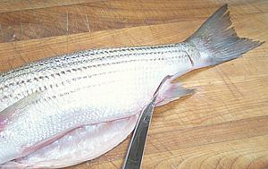
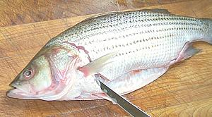

SAFARI
Users
- Equipment
- Scaling & Cleaning a Round Bodied Fish
- Filleting a Round Bodied Fish
- Skinning a Round Bodied Fish
- Preparing a Fish for Stuffing
- Fish Soup Stock - using the off-cuts
Equipment
|
|
Naturally, the right tools make a complex job like preparing fish much easier. In the photos to the left are all the tools I use for the job. You may already have some of them.
|
Scaling & Cleaning
Here in Southern California, where Asian fish markets abound, any decent market will scale and clean the fish for you at no charge - but some fish sold at an unusually low price are marked, "no cut, no clean" - so it's up to you.
For our example we'll use a Striped Sea Bass but any fish of this general shape will be pretty much the same, and even some fish, like tilapia, that are deeper bodied but do not have a hard keel. Linked from our Varieties of Fish page (very large page) you will find "Details and Cooking" pages for each variety of fish. These have notes with detailed information about handling each fish.
Important:
When filleting fish you need to have your sharpening stone ready and know how to use it. Fish fillet knives get dull quickly because their razor edge is scraping along hard bones. If you find any reluctance slicing through skin, time to sharpen.First scale the fish (not all fish have scales, but all kosher ones have at least some). Pros use a fish scaling tool (concentric toothed rings) on some fish and a very coarse stainless steel scouring pad for others, but for a few fish the back of your kitchen knife will do fine. This is the messy part as scales will be flying about, so you might want to do the scaling outdoors.
Some fish are much harder to scale than others. In some cases you
have to pull some of the scales off with long nose pliers, in others you
have to shave some of the scales off with the sharp edge of the knife, and
for one very soft fish, I found a grapefruit spoon worked well.
Next make a cut from the vent forward into the jaw. Make the cut shallow
from the inside out because you don't want to cut into the innards. When
you get to the bottom (pelvic) fins you'll meet resistance. Use you
kitchen shears from that point forward.
Now reach up into the fish and warp your fingers around the innards and pull them down and out. For many fish they will all pull out easily but for others you will need to use your kitchen shears to cut the esophagus.
Scrape out anything left inside and break through the swim bladder (if
present) so you can see the backbone. Note that many fish are going to be a
whole lot messier than this very fresh bass.
Next, unless you intend to simply discard the whole head, open the gill slots and pull out the gill arches. For some fish these are soft and pull out easily but for many you will have to cut them lose at the top and bottom ends with your kitchen shears and/or pull them out with pliers.
For most fish you can remove the gills through the gill slots but for
some it's easier to go in through the gill slots and push them out
through the bottom cavity, and for a few fish your only access is by
removing the bottom jaw.
Above and behind the gills you will find the heart and other blood works. There is always a "blood line" right below the backbone, and in many fish you have to remove the swim bladdar or tough membranes to get to it.
Scrape everything out and rinse with cold running water and you should have
a nice clean empty fish. There should be nothing blocking the opening between
the body cavity and the head and the backbone should be exposed.
Filleting
NOTE: My instructions diverge significantly from most you'll find on the Internet. Most say to cut around the collar at the head end and then make a single cut from head to tail (or from tail to head) holding the knife crosswise to the fish.
It Seems to me the thickness of the backbone and other factors of geometry would cause quite a bit of flesh to be left behind, particularly on some of the more unusual fish and definitely for larger fish. The procedure I use works well for me on many different kinds of fish of many sizes, leaves very little flesh on the bones, and I believe it would be less disaster prone for persons new to filleting.
Some instructions have you fillet the fish before cleaning, and that can be a little easier with some fish, but since most of you will have your fishmonger scale and clean your fish we'll use a procedure that works both ways.

Make a cut across the tail on both sides. Make another cut through the
skin from the tail cut down along each side of the anal fin to the body
cavity. This cut doesn't have to be real deep, but it does have to cut
through the skin to free the fillet.
 Make a deep cut all the way around the collar but as close to the collar as you can get. This will vary depending on the variety of fish. For the top half of the cut keep your knife tilted well under the collar to get as much flesh as possible. You may encounter a rib or other bone you can cut through with your kitchen shears and deal with later. In the case of this striped bass the cut has to go behind the pelvic (bottom) fins, but for many fish they're farther aft and you can cut in front of them.
Note: For some fish, particularly those with a wide head and for small
fish, I find it easier to fillet with the head removed. Just do the cuts
around the collar on both sides and use your kitchen shears to sever the
backbone as close to the head as you can (from the top for small fish,
from inside the body cavity for larger). Actually, I can't think of any
fish this wouldn't work for except when you want to cook it head-on -
but then you wouldn't be filleting it.
Make a cut from the top to the backbone moving from head to tail. Have the blade following against the fin rays until it can pick up the skeletal bones and follow those all the way to the spine. Lead with the length of the blade rather than the tip because following the bones is easier that way. Make sure the head end of the filet is completely free from the head if you've left the head on.
Some fish are perverse enough to have no fin rays to follow and for
others the fin rays stop before the skeletal bones start so you have to
be careful not to get on the wrong side of the skeletal bones.
Now from just behind the ribcage to the tail end cut downward from the backbone until you meet the cut you already made from the bottom. This should have freed the fillet everywhere except the ribcage.
It's quite difficult on many fish to follow the ribs without leaving a
lot of flesh or accidentally cutting off the skirt. On some fish
you don't care because the skirt is little more than skin but on other
fish it's quite fleshy. I recommend just cutting the ribs away from the
backbone with kitchen shears and dealing with them after the fillet
is removed from the fish. If you've removed the head you can cut in from
the head end.
Now you have a fillet separated from the fish. Use long nose pliers to pull out any remaining ribs. Start at the back and hold the flesh in place with a finger on each side of the rib as you pull it diagonally toward the top front.
Feel down the centerline and in most fish you'll feel a row of pin bones. These usually only need to be pulled for the first 1/3rd of the fish because they get progressively softer. Use the long nose pliers and pull them straight forward.
Of course, this is far too tedious for commercial operations, so they
either use a "J" cut (wasteful) or a very precise "V" cut to remove the
spines.
Now you are ready to do the same on the other side. You should end up with two nice fillets and a fish with very little flesh left on it. Feel around one last time for any bones that have escaped, particularly along the cut where the head was. Pull any you find with the long nose pliers.
For a good filleting fish there should be no bones or spines left if
you've been careful, but some fish aren't cooperative. See our special
instruction for Deboning Milkfish
(Bangus). Carp (distantly related) has the same problem but it's
nearly impossible to remove the spines, the diners just have to deal
with them as they eat. Most of the world considers Carp some of the most
delicious eating fish available, and easy to farm, but Americans have not
learned to deal with the spines.
Skinning Fish
With many fish you're going to want to skin the fillets, either because the skin shrinks badly and will curl or tear the fillets, or because it's a delicate flavored fish and the flavor of the skin is too strong. With a few fish you can practically just pull the skin off, but for most the skin is too delicate, adheres too well, or both.
You'll need a flat cutting board and a very sharp knife with a long straight blade. I find my 8 inch turkey slicing knife is excellent for this purpose. Our demo fish is the same stripe bass used for the cleaning and fillet sections above.
Start skin side down with the fillet lined up along the edge of the
board so the knife has flat access for the full length. Have the tail end
just a little over the edge of your cutting board so you can bend it down
and get a straight start with the knife blade. At this point you can see
what you're doing and if you're down to the skin and not through it.
Once you're started you're going to be running blind. The fillet isn't going to curl up as shown in the photo, that was done just to show you what is going on. Once you're started you can move your fingers up onto the board to get a better grip.
Holding the skin tightly to the board, keep the sharp edge of the
blade turned just vaguely downward toward the skin and run it forward
using just a tiny bit of sawing motion if you need to. Don't turn the
blade too far down or you'll cut through the skin or at all up or you'll
be taking flesh with the skin. When it's going just right the blade has
sort of a sizzling sound and feel.
You should now have a skin with practically no flesh and a nice clean fillet with no skin. If your fillet has some of the silver inner lining of the skin on it, don't worry about it. If you've broken through the skin and have patches of whole skin on the fillet, it's going to be difficult to remove (use the point of your filleting knife) so think hard whether you can tolerate a bit of skin before you try.
For some fish it's fine to toss the skins into the pot with the head,
bones and fins for making fish stock for soups, chowders and stews. For
other fish, the skin is too strong or bitter in flavor. In Southeast
Asia Snakehead skins are sold separately
for use in making soup stock. I tried it and wasn't that impressed.
Preparing a Fish for Stuffing
If you are going to stuff a fish, and particularly if you want to cut the stuffed fish into slices after it's cooked, you want to remove the backbone and ribs without disassembling the fish.
First take your kitchen shears and cut the backbone as far back in the cavity as possible, then do the same as far forward as possible. Take a pair of pliers and firmly grasp the backbone at one end and pull outward.
Watch carefully and you'll see places you need to hold with your fingers or cut with your filleting knife so flesh isn't ripped out. Sometimes it helps to cut the backbone in several places and sometimes you will need to cut the ribs from the backbone and then pull them separately to keep from tearing up your fish.
Explore the cavity with your fingers to find any remaining bones
and remove them with long nose pliers. There's a lot more on this in
our recipe Stuffed Baked
Mackerel which has a pictorial instruction section at the
bottom.
Another method of stuffing for fish that are quite round is to cut on each side of the dorsal fin and pull it out, then cut the spine at both ends from the top of the fish and and pull it out. finally clean the fish from the top leaving the belly intact. You place the cleaned fish in a normal swimming position and stuff from the top. I haven't tried this yet so I have no pictures.
Fish Soup Stock
We have a separate page for Making Fish Stock.